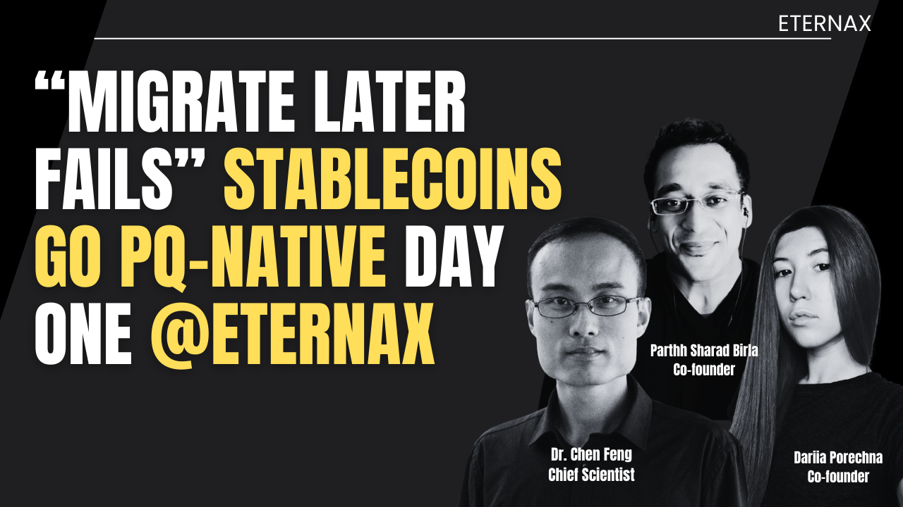

“Migrate Later” Is a Stablecoin Liquidity Risk: Why PQ-Native Day One Wins Distribution

The quantum threat is not a date. It is a coordination race. Stablecoins cannot afford to lose that race.
Post-quantum security is not a future patch. It is a multi-year migration that must start before certainty arrives. The uncomfortable truth is simple. The work is slow. The capability curve can accelerate. That mismatch is the risk.
For stablecoins, “we will migrate later” is not a technical plan. It is a distribution and liquidity risk.
This article has two halves:
- What leading experts are warning about, including the issuer-relevant mechanics and failure modes.
- What it implies for stablecoins, and why “PQ-native day one” is an adoption lever, not a nice-to-have.
Part I. Ground truth from the experts: what breaks and how markets lose
1) What quantum breaks, specifically
Justin Drake describes the threat in concrete crypto terms. Quantum attacks target elliptic-curve cryptography across multiple layers of modern chains:
- ECDSA for user transactions
- BLS signatures in consensus layers
- KZG commitments in data availability structures
Chris Peikert reinforces the systems point. When the cryptographic foundation fails, everything built on top inherits the failure. This is why the risk is systemic.
Issuer takeaway: stablecoins are financial infrastructure that inherits base-layer cryptographic risk by default.
2) How the loss happens in practice: minutes-to-break plus quiet key-harvest
The operational failure mode is not theoretical:
- In fast quantum modalities, key-breaking can be on the order of minutes, with an estimate discussed as roughly 10 minutes per key.
- Public-key exposure matters because an attacker can compute secret keys privately, accumulate targets, and only later broadcast draining transactions.
This matters because it kills the comforting belief that markets get a long, clean warning period. Quiet harvest first. Visible drains later.
Issuer takeaway: reactive migration under stress is not a plan. It is an outage and a confidence event.
3) Why “only a subset is vulnerable” is the wrong comfort
Two dynamics make the “limited impact” argument fragile:
- Scale-up is fast after liftoff. Going from one capable machine to many can happen quickly.
- Attackers optimize for surprise. The best move can be to harvest keys quietly, then drain in a coordinated action once advantage is large enough.
Issuer takeaway: the risk is not a slow drip. It is a coordination shock.
4) The throughput cliff is commercial physics, not ideology
This is the hinge point for stablecoins and real markets.
The experts frame the “size problem” plainly:
- ECDSA signatures: ~64 bytes
- A common PQ benchmark: Falcon-512 at ~666 bytes
- If signature bytes rise by ~10x while block size remains scarce, throughput can fall by ~10x unless the chain redesigns around the bytes-and-verification bill.
The illustrative consequences are straightforward:
- Bitcoin: ~3 TPS to ~0.3 TPS
- Ethereum: ~25 TPS to ~2.5 TPS
- Solana: ~1000 TPS to ~100 TPS
Issuer takeaway: a PQ upgrade that destroys market speed is a commercial failure even if it is cryptographically correct.
5) Coordination is the bottleneck: Bitcoin is the cleanest case study
The risk is not just cryptography. It is upgrade cadence, governance incentives, and migration coordination.
Nic Carter’s core warning is directionally simple: many decision-makers are not strongly incentivized to talk about risk, even if they privately appreciate it. That slows action.
The experts also emphasize the operational reality of migration:
- Even cycling through every UTXO is discussed as taking about three months if the chain did nothing else, and longer under normal constraints.
- The “Satoshi coins” overhang is framed as uniquely destabilizing due to scale, discussed as roughly 5% of supply.
Named examples in the debate highlight the coordination friction:
- Adam Back is referenced as dismissive in the framing.
- Jonas Nick and Mihal Kudinov are framed as taking the issue seriously.
Issuer takeaway: “we will inherit the base chain upgrade” means inheriting governance and coordination timelines you do not control.
6) The strategic reframe: PQ can be offensive, not defensive
The strongest point is not fear. It is advantage.
The experts explicitly reframe PQ as an offensive strategy to attract serious capital and risk-aware counterparties. That is the correct lens for stablecoins, where trust and continuity are the product.
Issuer takeaway: PQ-native is not just about avoiding catastrophe. It is a distribution wedge.
Part II. Stablecoins: “PQ-native day one” is a distribution advantage (Best, tighter VC cut)
Stablecoin issuance is not a contract. It is a distribution system. The moment a stablecoin succeeds, it becomes embedded across exchanges, custodians, market makers, payments, treasury ops, collateral systems, and risk committees. That embeddedness is exactly why “we will migrate later” is dangerous.
The question is not whether an upgrade is technically possible. The question is whether your liquidity survives the upgrade.
1) The stablecoin failure mode: liquidity fracture
A stablecoin dies in the real world the same way it dies in markets: through confidence and continuity.
- Distribution becomes deep and global.
- A post-quantum migration becomes urgent.
- Integrators move at different speeds. Wallets, custody stacks, exchanges, and venues do not upgrade in lockstep.
- Deposits, withdrawals, and settlement guarantees become inconsistent or paused.
- Liquidity fragments across versions and support states.
- The narrative flips from “cash-like” to “operationally unreliable.”
In stablecoins, reliability is the product. When rails look unreliable, the market prices that like solvency.
2) Why “wait for base-chain PQ upgrades” fails twice
A) You do not control the schedule. Base-layer upgrades are governed by social consensus and ecosystem coordination. Issuers cannot bet distribution on timelines they cannot enforce.
B) Even successful upgrades can be throughput-fatal.
This is the fatal combination: delayed plus throughput-fatal.
3) The issuer posture that wins: PQ-native day one
The highest-trust issuer statement is straightforward:
Day-one PQ-native issuance means your stablecoin is born with a PQ-safe authorization perimeter. No emergency perimeter migration event later.
That compounds across distribution:
- Easier approvals from risk committees and compliance.
- Cleaner continuity story for exchanges and custodians.
- Fewer integration-state failure modes for market makers.
- Better long-horizon reliability for payments and treasury rails.
PQ becomes an adoption wedge, not a future liability.
4) Where EternaX fits: market-speed PQ plus auditable privacy, driven by a protocol-native novel scheme
Many networks will add PQ compatibility. The differentiator is whether PQ preserves market speed and whether privacy remains auditable.
EternaX is engineered around a protocol-native novel PQ scheme specifically to avoid the Falcon-class throughput cliff and keep markets fast while upgrading authorization safety. In EternaX materials, the claimed signature size is ~160 bytes (under peer review), with low single-digit directional overhead rather than Falcon-class haircuts.
EternaX also adds auditable privacy: selective disclosure with verifiable controls, enabling serious flows without choosing between fully public rails and opaque privacy.
5) Directional TPS-loss sensitivity: EternaX vs Falcon-class assumptions
Directional sensitivity snapshot (mechanism illustration):
{kind=link}
- EternaX: ~2% overhead
- Solana (Falcon-class): ~77% TPS loss
- Sui (Falcon-class): ~69% TPS loss
- Ethereum (Falcon-class): ~31% TPS loss
Credibility note: treat these as directional sensitivity estimates. Publish assumptions and benchmarks. Separate measured results from modeled results.
6) The repeatable wedge
- Stablecoins cannot tolerate a forced perimeter migration without liquidity fracturing.
- PQ creates a throughput cliff unless the protocol neutralizes the bytes-and-verification bill.
- The winning posture is PQ-native day one + market-speed PQ + auditable privacy.
- EternaX’s advantage is that this is driven by a protocol-native novel PQ scheme, not a bolt-on.
Closing
If you mint a stablecoin, you are minting an authorization perimeter that must survive years of market stress and future cryptographic transitions.
The experts’ warning is consistent: quiet attacks, scale-up dynamics, and the throughput cliff. Waiting for certainty is how you lose the race.
So the issuer question becomes obvious:
Do you want your stablecoin to be forced into a future migration event, or do you want it born PQ-native from day one?
EternaX is built for the second answer, with the additional commercial requirement that matters: post-quantum security that does not sacrifice market speed.
Connect: info@eternax.ai
EternaX is a post-quantum, market-speed blockchain built for stablecoins, tokenized cash, RWAs, and high-velocity on-chain markets. Its core advantage is a protocol-native novel post-quantum scheme designed to keep real markets fast while upgrading authorization security. In EternaX materials, the claimed PQ signature size is ~160 bytes, targeting low single-digit directional overhead and ~120ms spendable finality, rather than accepting Falcon-class throughput haircuts that can compress TPS, raise fees, and degrade liquidity. EternaX also provides auditable privacy (selective disclosure with verifiable controls) so serious flows can move with transparency where required and confidentiality where necessary. For issuers and investors, the wedge is direct: mint PQ-native stablecoins day one, avoid future perimeter-migration and liquidity-fracture risk, and scale on rails engineered for speed, security, and continuity. For more details, contact info@eternax.ai.